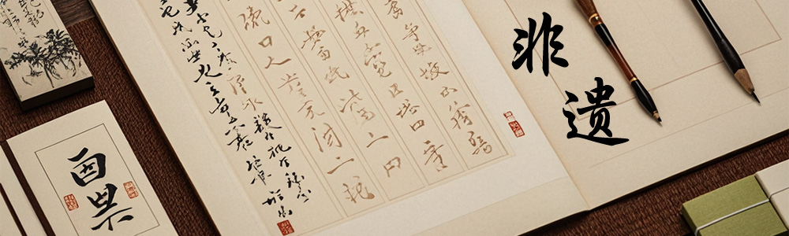 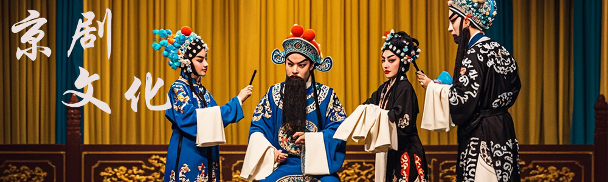 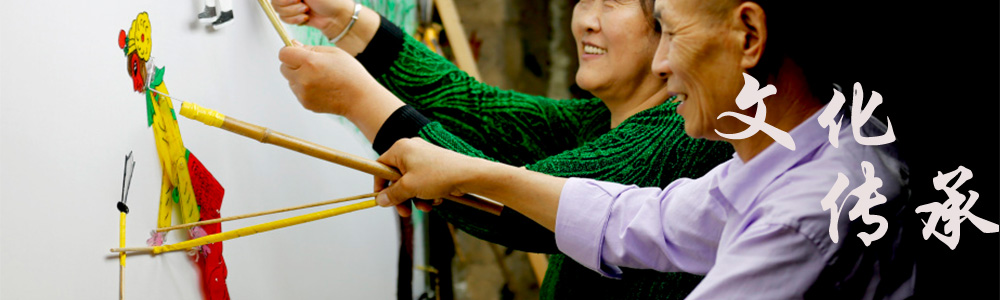
首页
非遗项目
非遗活动
传承人物
互动交流
登录
|
注册
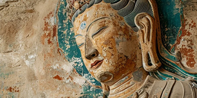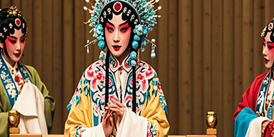
常书鸿：“敦煌守护神”。敦煌学的奠基人之一。
西藏日喀则市仁布县人，江嘎尔藏戏唯一的继承人和传唱者。
哈萨克族医药中的布拉吾药浴熏蒸疗法,有什么对身体的好处？
“朝霞不出门，晚霞行千里。”古人的智慧展现了哪些？
民间法师“九月”，聚拢是烟花，散开是人间--火壶。
油纸伞的起源可以追溯到中国古代，居然其使用历史已有1000多年。
非遗项目
*2008年，分水岭油纸伞列入国家级非物质文化遗产名录。
*《牡丹亭》的表演难度颇高，表演时主要体现在哪些方面？
*传统医药是指在特定地域和文化背景下发展起来的各种医学体系和治疗方法。
神话故事到底想告诉我们什么道理？
盘古开天辟地：传说远古时期，宇宙混沌如鸡子，盘古在其中孕育而生。盘古用斧头劈开混沌，清气上升为天，浊气下沉为地。最终盘古因力竭而倒下，身体各部分化为天地万物。
民间艺术
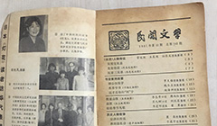
民间文学
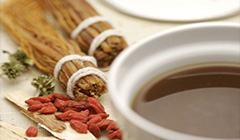
民间药物
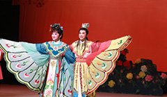
民间戏剧
非遗活动
宣纸：千年文化与现代艺术的桥梁
宣纸的历史可追溯到大约1500至1600年前，其中明清时期标志着宣纸制造的黄金时代。安徽宣城地区出产的宣纸因其卓越品质而声名远扬在传统艺术方面：宣纸承载着古代文人墨客在书写和绘画方面的丰富遗产。
*在云南的一些旅游地区，游客可以亲手尝试制作东巴纸，感受古老造纸术的神奇
*历经千年不间断传承与积累，泉州傀儡戏保存独特剧种音乐“傀儡调”。
*在特定地域和文化背景下发展起来的各种医学体系。
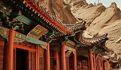
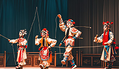
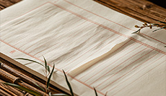
传承人物
*常书鸿：“敦煌守护神”。前敦煌文物研究所所长、敦煌学的奠基人之一。
*第二批国家级非物质文化遗产项目广昌孟戏代表性传承人李安平
*朱炳仁：国家级非物质文化遗产代表性项目铜雕技艺国家级代表性传承人。
尤文凤：赫哲族民间艺人
国家级非物质文化遗产项目赫哲族鱼皮制作技艺的传承人。15岁起随母亲学习鱼皮制品工艺，能独立完成从剥皮到成品的制作过程，其鱼皮服饰等作品被多国博物馆收藏。鱼皮服饰的制作有多精巧？
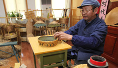
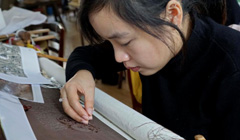
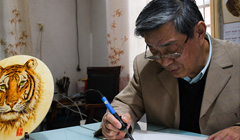
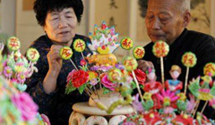
互动交流
千年来第一个打铁花的女孩
“东风夜放花千树，更吹落，星如雨。”辛弃疾的这首词，描绘的是元宵节打铁花表演的盛况。似漫天繁星点缀夜空，热烈而绚烂。铁花破空而出，在无尽的黑暗中绽放，那是华夏文明独有的诗意，也是千年传承的东方式浪漫。
*吴大安宣传非遗文化，不想在看见这一项技艺消失，老祖宗东西怎么可以丢！
*希望能真正帮助到非遗守艺人，何凡带我们学习了解非遗的背后。
*传承的路一直没有停止，历史的发展会让我们的文化更加丰富，。
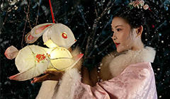
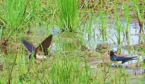